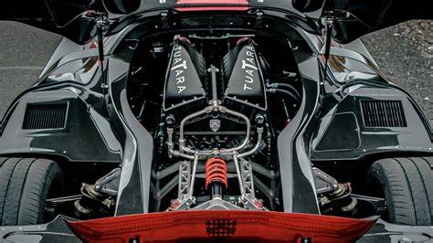

The SSC Tuatara is poised to snatch the speed title from Bugatti. According to SSC, the Tuatara has a top speed of above 300 mph and is one of the most aerodynamic supercar.
The slippery body shape was penned by Jason Castriota – the man behind the 2007 Maserati Gran Turismo and 2006 Ferrari 599 GTB Fiorano among many others – and has a drag coefficient of 0.279 Cd. The Tuatara has a lightweight carbon fiber monocoque chassis and body to save weight. True to form, the Tuatara tips the scales at around 2,750 pounds.

Of course, it has the muscle to back up its jet fighter-inspired styling. The SSC Tuatara is motivated by a bonkers twin-turbocharged 5.9-liter V8 co-developed with Nelson Racing Engines. On a steady diet of E85 gasoline, the SSC Tuatara is pushing 1,750-horsepower to the tarmac. Fill it up with regular 91 octane fuel and you still get 1,350 horsepower from the blown mill. The engine is mated to a CIMA seven-speed semi-automatic gearbox turning the rear wheels.